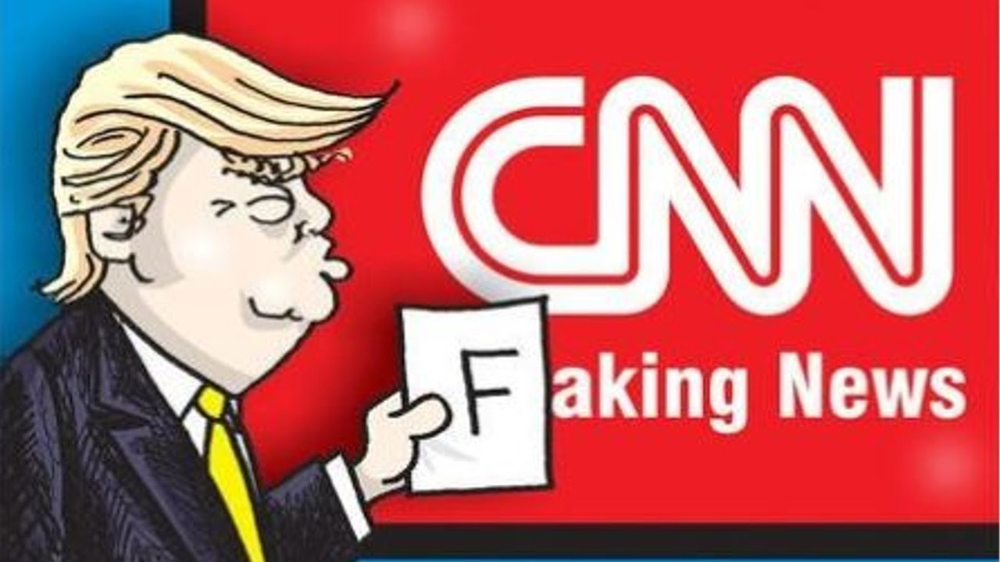

¿Qué son las noticias falsas?
publicado el domingo 26 de agosto 2018 por Josué González
Las noticias falsas son producto de prácticas de pseudo periodismo, carentes de veracidad y argumentos a la hora de formular información, es decir, que el objetivo de las "fake news" en muchos casos es desestimar la realidad a modo de conveniencia e intereses por parte de aquellos que las escriben.

Claire Wardle definió la desinformación como la «creación y difusión deliberada de información que se sabe es falsa», a diferencia de la información errónea, que es la «difusión involuntaria de información falsa». Estableció siete categorías ordenadas según su grado de intención de engaño deliberado.Categorías
- Sátira o parodia: El objetivo no es el engaño, sino la sátira, pero la información tiene el potencial de inducir a error, dado que su formato es similar al de las noticias auténticas.
- Conexión falsa: Los titulares no resumen con exactitud el contenido de la nota periodística.
- Contenido engañoso: Uso engañoso de información para enmarcar un tema o una persona.
- Contexto falso: El contenido genuino se enmarca en un contexto falso.
- Contenido impostor: Las fuentes genuinas son suplantadas.
- Contenido manipulado: La información o imágenes genuinas son manipuladas.
- Contenido inventado: Contenido totalmente falso, creado con el objetivo de dañar o engañar.